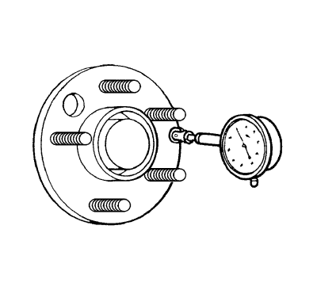
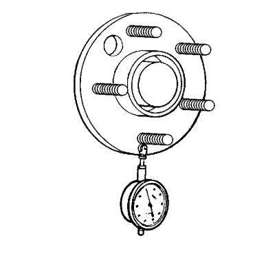

- Elevar el vehículo y soportarlo de manera segura. Consultar Elevación y soporte en alto del vehículo .
- Marque la posición de las ruedas en referencia a los pernos y la posición específica del vehículo en cada neumático y llanta: ID, IT, DD, DT.
- Retire del vehículo los conjuntos de neumático y llanta. Consultar Desmontaje y montaje de la rueda y el neumático .
- Retire los rotores de freno y/o tambores de freno del vehículo. Limpie las superficies de montaje de los rotores y tambores de freno, de existir, y las bridas del cubo/eje y elimine cualquier resto de suciedad, óxido y corrosión.

- Coloque el juego del Indicador de dial GE-8001, o equivalente, sobre la superficie mecanizada del cubo de rueda/brida del eje en el exterior de los pernos de rueda.
- Gire el cubo una vuelta completa para localizar el punto bajo.
- Establezca el juego del Indicador de dial GE-8001, o equivalente, a cero en el punto bajo.
- Gire el cubo una vuelta completa más y mida la cantidad total de alabeo del cubo de rueda/brida del eje.
Especificación - Pauta
Pauta de tolerancia de alabeo del cubo de rueda/brida del eje: 0,132 mm (0,005 pulg.)
- Si el alabeo del cubo de rueda/brida del eje ESTÁ dentro de las especificación y el vehículo está equipado con tornillos de rueda, continúe con el paso 13.
- Si el alabeo del cubo de rueda/brida del eje ESTÁ dentro de las especificación y el vehículo está equipado con pernos de rueda, continúe con el paso 19.
- Si el alabeo del cubo de rueda/brida del eje es marginal, el cubo de rueda podría o no ser el origen de la perturbación.
- Si el alabeo del cubo de rueda/brida del eje fuera excesivo, sustitúyalo. Mida el alabeo del nuevo cubo de rueda/brida del eje.

- Coloque el juego del Indicador de dial GE-8001, o equivalente, de tal forma que esté en contacto con los pernos de montaje de la rueda.
Mida el alabeo del perno tan cerca de la brida como sea posible.
- Gire el cubo una vuelta completa para registrar cada uno de los pernos de rueda.
- Ajuste el juego del Indicador de dial GE-8001, o equivalente, a cero en el pernos más bajo.
- Gire el cubo una vuelta completa más y mida la cantidad total de alabeo del perno de rueda/círculo de pernos.
Especificación - Pauta
Pauta de tolerancia de alabeo del perno de rueda: 0,254 mm (0,010 pulg.)
- Si el alabeo de los pernos de rueda - círculo de pernos - fuera marginal, éstos podrían o no ser el origen de, o contribuir a, la perturbación.
- Si el alabeo de los pernos de rueda - círculo de pernos - fuera excesivo, sustitúyalos como estime necesario. Mida el alabeo de los nuevos pernos de rueda.
- Inspeccione las roscas y la sección cónica de asiento en cada uno de los tornillos en busca de daños.
- Deberá sustituir los tornillos de rueda que presenten roscas y/o asientos cónicos dañados.
- Coloque la sección roscada de cada tornillo de rueda a lo largo de un borde recto para inspeccionar su posible deformación.
- Deberá sustituir los tornillos de rueda que no sean rectos.